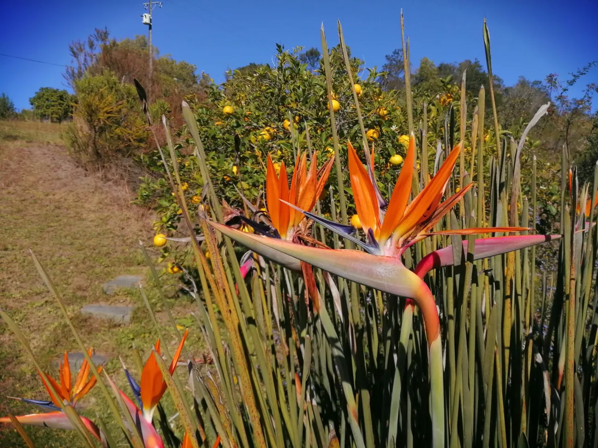

Travel · South Africa
The Garden Route's Green Heart: Why Wilderness Will Steal Your Soul

Some road trips are about the destination. Others are about the journey. And then there's South Africa's Garden Route: a journey so breathtaking, it is the destination. Winding along the coast between the mountains and the sea, this legendary route is a non-stop parade of lush forests, shimmering lagoons, and dramatic coastlines. It's where nature decided to show off.
And right in the centre of this natural masterpiece, you'll find a small town with a big, wild soul: Wilderness. If the Garden Route (Tuinroete in Afrikaans) is a string of pearls, Wilderness is the glowing, emerald-green gem at its core.
Welcome to Wilderness: The Name Says It All 🌳
Forget traffic lights and high-rises. In Wilderness, the landmarks are rivers, forests, and an endless stretch of golden beach. The town is perfectly tucked between the towering Outeniqua Mountains and the Indian Ocean, wrapped around a serene lagoon and the winding, tea-coloured Touw River.
This isn't a place you just pass through; it's a place you sink into. The vibe is one of pure tranquility. It's the kind of place where you wake up to the sound of the Knysna Turaco (a beautiful bird also called the "Loerie") instead of an alarm clock. It's the very definition of "getting away from it all."
Your Wilderness To-Do List: Paddle, Hike, and Breathe ✨
While the temptation to do absolutely nothing is strong (and highly encouraged!), Wilderness is a gentle playground for nature lovers.
- Paddle the "River of Dark Water": The number one thing to do is rent a canoe or kayak. Paddling the calm, dark waters of the Touw River as it winds through a forested gorge is pure magic. The silence is broken only by the dip of your paddle and the call of birds. It feels like you've entered another world.
- Hike to a Hidden Waterfall: Many of the canoe trips can be paired with a hike. Tie up your boat and follow the boardwalks of the Giant Kingfisher Trail through the forest. Your reward? A beautiful waterfall and a series of rock pools that are perfect for a refreshing (and chilly!) swim.
- Get a Bird's-Eye View: For a shot of adrenaline, run off a cliff! No, really. Wilderness is famous for its paragliding, offering you the chance to soar silently over the coastline like an eagle. The views are, without a doubt, spectacular.
- Walk for Miles: The beach here is vast, wild, and stunningly beautiful. It's perfect for long, soul-searching walks where your only companions are the seabirds and the crashing waves.
The Jewels Beyond the Wilderness 💎
Wilderness is the perfect basecamp for exploring the rest of the Garden Route's treasures. The beauty of this region is its diversity.
- Knysna: Just a short drive away, this bustling town is famous for its stunning lagoon, guarded by two massive sandstone cliffs known as the Knysna Heads. It's also the oyster capital of South Africa!
- Plettenberg Bay: Known affectionately as "Plett," this is the glitzier, more glamorous stop on the route, with pristine beaches and the incredible Robberg Nature Reserve, a peninsula offering one of the best hikes on the continent.
- Tsitsikamma National Park: This is where the "garden" becomes a wild, untamed jungle. Hike across the famous suspension bridge at the Storms River Mouth, go ziplining through the forest canopy, or, if you're a certified thrill-seeker, take the plunge from the Bloukrans Bridge, the world's highest bridge bungee jump!
The Garden Route is more than just a checklist of beautiful towns. It's an invitation to slow down and reconnect. It's about stopping the car for no reason other than to admire a view, discovering a hidden farm stall selling fresh strawberries, and letting the rhythm of nature set your schedule.
And Wilderness? It's the place that best captures this spirit. It's the green, beating heart of it all. So pack a bag, rent a car, and go find your own little piece of paradise. The river is waiting.